H.264 视频编码原理详解
H.264/AVC（Advanced Video Coding）是视频压缩史上应用最广泛的标准。从 2003 年发布至今，它几乎统治了数字视频的每一个场景：流媒体、视频会议、广播电视、监控、蓝光光盘、移动设备……即使在 HEVC 和 AV1 已经成熟的今天，H.264 仍然是兼容性最好的"最大公约数"。
H.264 在 MPEG-2 的基础上提供了约 50% 的压缩效率提升，这并非来自某一个突破性的技术，而是来自一系列精心设计的工具的组合：灵活的宏块划分、多参考帧、1/4 像素运动估计、整数 DCT、环路滤波、CABAC 熵编码……每个工具单独看都不算革命性的，但它们组合在一起，形成了一个高度协调的编码系统。
本篇按 12 个专题系统拆解 H.264 的编码原理，从数字视频的基础概念一直讲到熵编码的细节。这 12 个专题的结构参考了抖音合集"望天空云卷云舒"的 H.264 视频编码原理系列，在此基础上做了学术化和工程化的扩展。
H.264 由两个国际标准组织联合制定：
- ITU-T VCEG（Video Coding Experts Group）：国际电信联盟的视频编码专家组
- ISO/IEC MPEG（Moving Picture Experts Group）：国际标准化组织的运动图像专家组
两个组织联合成立了 JVT（Joint Video Team），于 2001 年开始开发，2003 年 5 月正式发布第一版标准。在 ITU-T 体系中称为 H.264，在 ISO/IEC 体系中称为 MPEG-4 Part 10 / AVC（Advanced Video Coding）。
这是两个组织继 H.262/MPEG-2 之后的第二次深度合作。
| 时间 | 事件 |
|---|---|
| 1998 | VCEG 开始 H.26L 项目（"Long-term"），探索新一代视频编码 |
| 2001 | JVT 成立，合并 VCEG 和 MPEG 的研究成果 |
| 2003.05 | H.264/AVC 第一版正式发布 |
| 2004 | 补充 FRExt（Fidelity Range Extensions），支持更高位深和色度采样 |
| 2007 | 补充 SVC（Scalable Video Coding），支持可伸缩编码 |
| 2009 | 补充 MVC（Multiview Video Coding），支持多视角/3D 视频 |
H.264 的应用几乎覆盖了所有数字视频场景：
- 流媒体：YouTube、Netflix、Bilibili 等平台的早期主力编码格式
- 视频会议：Zoom、Teams、WebRTC 默认编码
- 广播电视：DVB-T/T2、ATSC、ISDB 等数字电视标准
- 监控：安防摄像头标准编码
- 蓝光光盘：BD-ROM 三种可选编码之一（与 MPEG-2、VC-1 并列）
- 移动设备：3GPP、iPhone 视频录制
面对 H.264 的专利授权费用问题，中国自主研发了 AVS（Audio Video coding Standard）系列标准：
- AVS1（2006）：对标 H.264 Baseline/Main Profile，压缩效率相近
- AVS2（2016）：对标 HEVC，面向超高清视频
- AVS3（2019）：对标 VVC，支持 8K 视频
AVS 标准的专利政策更加友好，授权费用远低于 H.264/HEVC。
数字视频是连续的图像帧序列在数字域的表示。理解数字视频，需要理解以下几个核心概念：
- 像素（Pixel）：图像的最小单位，每个像素有一个亮度值和色度值
- 分辨率（Resolution）：图像的宽高像素数，如 1920×1080
- 帧率（Frame Rate）：每秒显示的帧数，如 24fps、30fps、60fps
- 位深（Bit Depth）：每个像素分量的比特数，如 8-bit（256 级）、10-bit（1024 级）
- 色彩空间（Color Space）：像素值的数学表示方式，如 RGB、YUV
一幅数字图像可以表示为二维离散信号 $f(x, y)$，其中 $(x, y)$ 是像素坐标，$f$ 是像素值。
一段数字视频可以表示为三维离散信号 $f(x, y, t)$，其中 $t$ 是时间索引（帧号）。
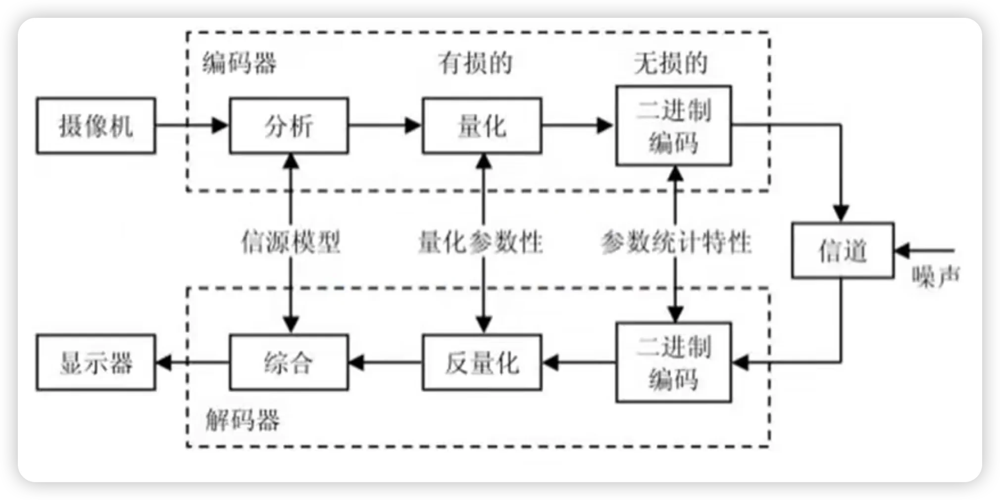
模拟视频信号转换为数字视频需要两个步骤：
空间采样（Spatial Sampling）在水平和垂直方向上对连续的图像进行离散采样，得到像素网格。采样间隔决定了分辨率。
幅度量化（Amplitude Quantization）将每个像素的连续亮度/色度值映射为离散的整数值。量化精度由位深决定：
| 位深 | 级数 | 典型应用 |
|---|---|---|
| 8-bit | 256 | 标准动态范围（SDR）视频 |
| 10-bit | 1024 | 高动态范围（HDR）视频 |
| 12-bit | 4096 | 专业影视制作 |
PCM（Pulse Code Modulation，脉冲编码调制）是将模拟信号转换为数字信号的标准方法。它是所有数字音频和视频的基础——从 CD 音频到数字电视，从电话系统到数字摄像机，都使用 PCM 或其变体。
PCM 由 Alec Reeves 于 1937 年发明，是数字通信的奠基性技术之一。
PCM 的三个步骤PCM 将连续的模拟信号转换为离散的数字码流，包含三个核心步骤：
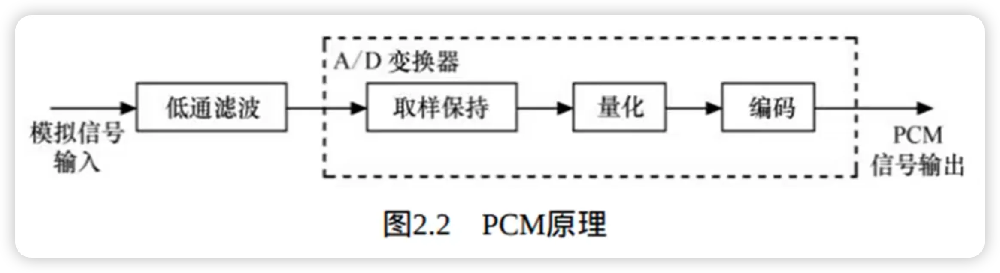
在时间轴上以固定间隔 $T_s$（采样周期）对连续模拟信号 $f(t)$ 进行采样，得到离散时间信号 $f(nT_s)$。
采样频率 $f_s = 1/T_s$ 必须满足奈奎斯特采样定理（Nyquist Sampling Theorem）：
其中 $f_{\text{max}}$ 是信号的最高频率分量。如果采样频率低于 2 倍最高频率，会发生混叠（Aliasing）——高频分量被错误地重建为低频分量。
采样频率的实际选择：- 音频：人耳可听范围 ~20 kHz，CD 使用 44.1 kHz（$> 2 \times 20 \text{ kHz}$）
- 视频：空间采样的"采样频率"由分辨率决定。1080p 意味着水平方向每行采样 1920 个点
将每个采样值的连续幅度映射为有限个离散电平。量化级数 $L$ 由位深 $n$ 决定：
量化引入了量化误差（Quantization Error）：
其中 $\hat{f}(nT_s)$ 是量化后的值。量化误差是不可逆的——这是有损压缩的根本来源。
量化信噪比（SQNR）：对于均匀量化和满幅度正弦信号，量化信噪比约为：
这意味着每增加 1 bit 位深，信噪比提高约 6 dB：
| 位深 | 量化级数 | SQNR（理论） |
|---|---|---|
| 8-bit | 256 | ~50 dB |
| 10-bit | 1024 | ~62 dB |
| 12-bit | 4096 | ~74 dB |
| 16-bit | 65536 | ~98 dB（CD 音频） |
量化是 PCM 中唯一引入不可逆失真的步骤，也是视频压缩中最重要的概念之一。理解量化原理对于理解后续 H.264 中的 DCT 量化至关重要。
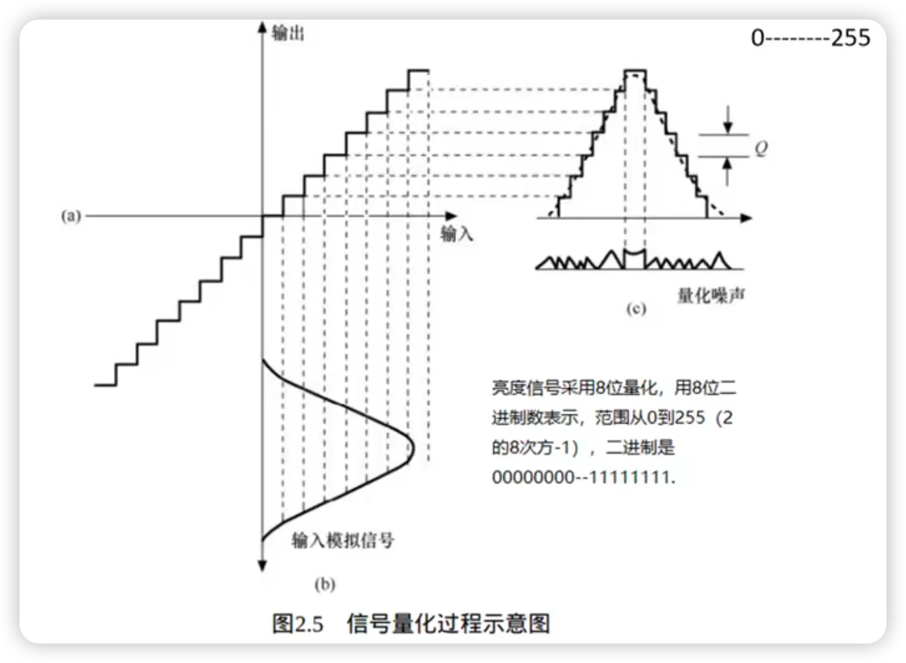
均匀量化的量化间隔 $\Delta$ 在整个信号范围内保持恒定：
其中 $V_{\text{max}}$ 是信号的最大幅度，$L = 2^n$ 是量化级数。
量化误差范围：
均匀量化的特点：
- 优点：实现简单，硬件成本低
- 缺点：小信号和大信号使用相同的量化间隔，小信号的相对误差更大
非均匀量化根据信号幅度调整量化间隔：
- 小信号区域：量化间隔更小 → 精度更高
- 大信号区域：量化间隔更大 → 精度较低
这与人眼的感知特性一致：人眼对暗部的亮度变化更敏感，对亮部的变化较不敏感。
实现方式：先对信号做压缩（Compress），再均匀量化，解码时做扩张（Expand）。这种组合称为 Companding（压缩-扩张）。
| 标准 | 压缩函数 | 应用 | ||
|---|---|---|---|---|
| μ-law（μ 律） | $F(x) = \frac{\ln(1+\mu | x | )}{\ln(1+\mu)} \cdot \text{sgn}(x)$ | 北美/日本电话（μ=255） |
| A-law（A 律） | 分段对数函数 | 欧洲/中国电话（A=87.6） |
量化是视频压缩中控制码率和质量的核心手段：
1. H.264 中的 DCT 系数量化使用可变量化步长（由 QP 控制），本质上是非均匀量化思想的延伸
2. QP 越大 → 量化步长越大 → 更多系数被量化为零 → 码率越低但失真越大
3. 量化是视频编码中唯一的有损步骤——运动估计、变换、熵编码都是无损的
PCM 编码的逆过程是解码与重建——将数字码流还原为模拟信号。解码过程是编码的逆操作：
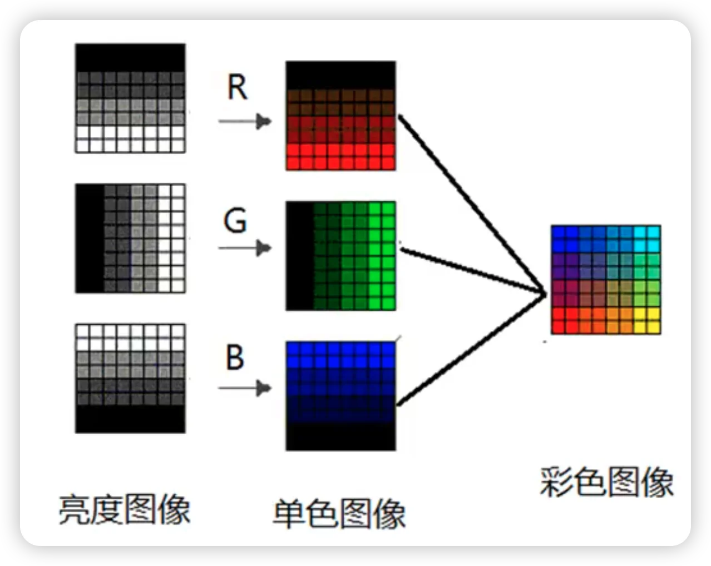
将接收到的二进制码流还原为量化电平序列。这是编码步骤的简单逆操作：
接收码流： 011 100 110 101 010 ...
解码后： y3 y4 y6 y5 y2 ... （量化电平值）将离散的量化电平转换为连续的模拟电压信号。DAC 输出的是一个阶梯状信号（零阶保持，Zero-Order Hold）：
每个采样值在一个采样周期内保持不变，形成阶梯波形。
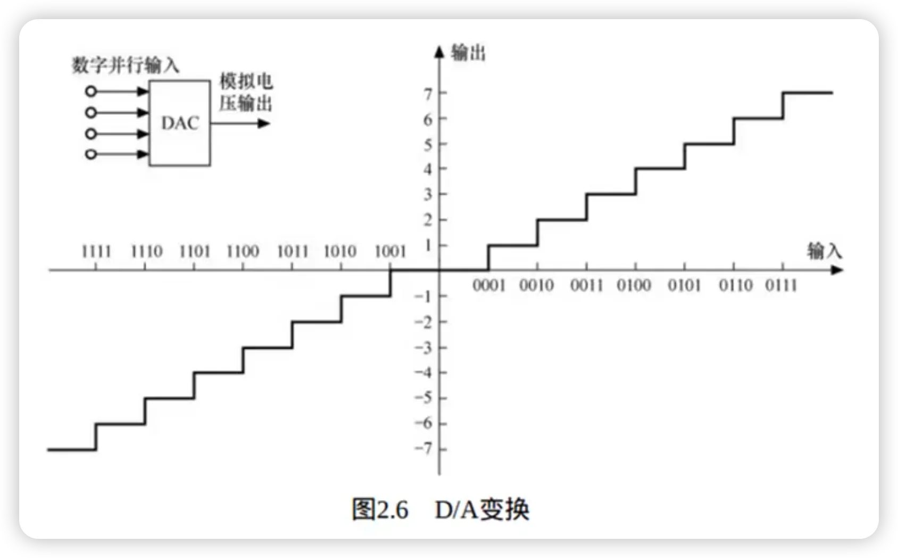
DAC 的本质是将二进制数字量转换为模拟电压/电流。以 $n$-bit DAC 为例：
其中 $D$ 是输入的数字量（0 到 $2^n - 1$），$V_{\text{ref}}$ 是参考电压。
两种经典 DAC 架构 权电阻网络（Weighted Resistor DAC）每个比特位控制一个电阻开关，电阻值按二进制权重分配：
- 最高位（MSB）：电阻 $R$，权重 $1/2$
- 次高位：电阻 $2R$，权重 $1/4$
- 第三位：电阻 $4R$，权重 $1/8$
- 最低位（LSB）：电阻 $2^{n-1}R$，权重 $1/2^n$
所有支路电流通过运算放大器求和，输出电压与数字量成正比。
缺点：$n$ 位 DAC 需要电阻值范围从 $R$ 到 $2^{n-1}R$。对于 12-bit DAC，电阻比为 $2^{11} = 2048:1$，难以保证精度。
R-2R 梯形网络（R-2R Ladder DAC）只使用两种阻值 $R$ 和 $2R$，通过递归的梯形结构实现二进制权重分配：
- 每个节点向左看的等效电阻都是 $2R$
- 每个节点的电流被精确地一分为二
- 从 MSB 到 LSB，电流按 $1/2, 1/4, 1/8, \ldots$ 递减
优点：
1. 只需两种阻值，易于集成制造
2. 电阻比精度容易保证
3. 适用于高位深 DAC（12-bit、16-bit 甚至更高）
R-2R 梯形网络是实际 DAC 芯片（如音频 DAC、视频 DAC）中最常用的架构。
DAC 的关键性能指标| 指标 | 含义 | 典型值 |
|---|---|---|
| 分辨率（Resolution） | 输出电平的最小变化量 | $V_{\text{ref}} / 2^n$ |
| 建立时间（Settling Time） | 输出稳定到目标值的时间 | 几 ns 到几 μs |
| 线性度（Linearity） | 输出与理想值的最大偏差 | < 1 LSB |
| 采样率（Sample Rate） | 每秒可转换的次数 | 音频：44.1–192 kHz；视频：数十 MHz |
DAC 输出的阶梯信号在频域上等效于理想采样信号通过一个 sinc 滤波器：
这意味着 DAC 输出在高频处有sinc 衰减——在奈奎斯特频率 $f_s/2$ 处衰减约 3.9 dB。高质量的重建系统需要补偿这种衰减。
Step 3：低通滤波（LPF, Low-Pass Filter）DAC 输出的阶梯信号包含高频成分（由阶梯跳变引入），需要通过重建低通滤波器（Reconstruction Filter）平滑：
- 截止频率设为 $f_s / 2$（奈奎斯特频率）
- 滤除采样引入的高频镜像分量
- 输出平滑的连续模拟信号 $\hat{f}(t)$
重建信号 $\hat{f}(t)$ 与原始信号 $f(t)$ 的差异完全来自量化误差：
采样和编码本身不引入失真（在满足奈奎斯特定理的前提下）。量化是唯一引入不可逆失真的步骤。
编解码完整链路总结编码端（ADC）：
模拟信号 f(t) → 采样 → f(nTs) → 量化 → f̂(nTs) → 编码 → 二进制码流
传输/存储
解码端（DAC）：
二进制码流 → 解码 → f̂(nTs) → DAC → 阶梯信号 → LPF → 重建信号 f̂(t)PCM 的编解码框架是所有数字视频编码的基础原型：
- 视频编码中的反量化 + 反变换 + 重建帧就是 PCM 解码思想在变换域的推广
- H.264 解码器中的反量化 → 反 DCT → 重建帧 → 环路滤波对应 PCM 的解码 → DAC → LPF
- 环路滤波（Deblocking Filter）本质上是一种自适应低通滤波器，用于消除量化引入的块效应
PCM 的原始码率（未压缩）为：
对于单通道信号。对于视频：
以 1080p、30fps、8-bit RGB（3 通道）为例：
这就是为什么视频压缩如此重要——原始的 PCM 码率太高，无法直接传输或存储。
| 变体 | 全称 | 原理 | 应用 |
|---|---|---|---|
| DPCM | Differential PCM | 编码相邻采样值的差值 | 图像/语音压缩 |
| ADPCM | Adaptive DPCM | 自适应量化步长的 DPCM | 电话、G.726 音频 |
| Δ-Modulation | Delta Modulation | 1-bit DPCM，只编码增减 | 简单语音编码 |
DPCM 的思想直接影响了视频编码中的帧内预测和帧间预测——都是利用相邻样本的相关性，只编码差值（残差）而非原始值。
数字视频中所有颜色的基础是三原色光：红（Red）、绿（Green）、蓝（Blue）。这三种颜色被称为加色三原色，因为将它们以不同强度叠加可以产生几乎所有人眼可见的颜色。
为什么是红、绿、蓝？人眼视网膜上有三种视锥细胞（Cone Cells），分别对红、绿、蓝三种波长的光最敏感。大脑通过这三种细胞的信号组合来感知颜色。RGB 模型正是基于这一生理事实——只要精确控制红、绿、蓝三种光的强度，就能"欺骗"人眼看到任何颜色。
加色混合规律| 混合 | 结果 | 说明 |
|---|---|---|
| R + G | 黄色（Yellow） | 红绿叠加 |
| G + B | 青色（Cyan） | 绿蓝叠加 |
| B + R | 品红（Magenta） | 蓝红叠加 |
| R + G + B | 白色（White） | 三原色等量叠加 |
| 无光 | 黑色（Black） | 零强度 |
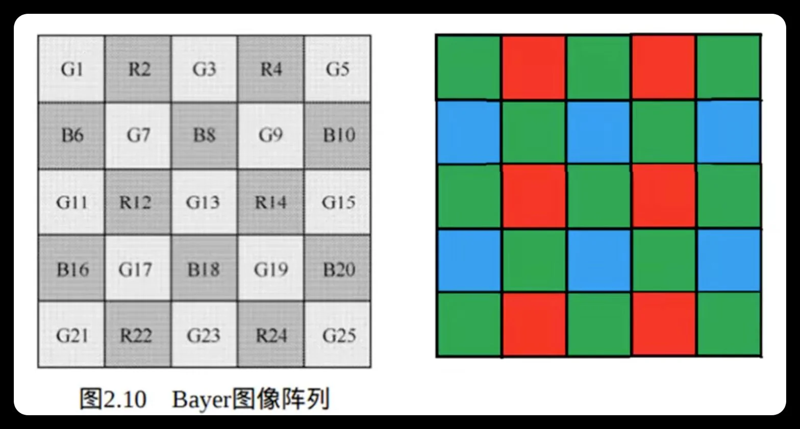
在 8-bit RGB 系统中，每个颜色通道用 0–255 的整数表示：
- (0, 0, 0) = 黑色
- (255, 255, 255) = 白色
- (255, 0, 0) = 纯红
- (0, 255, 0) = 纯绿
- (0, 0, 255) = 纯蓝
- (255, 255, 0) = 黄色
每个像素需要 24 bit（3 × 8 bit）来存储完整的 RGB 信息。这就是为什么未压缩视频的数据量如此巨大。
加色 vs 减色| 模型 | 三原色 | 混合原理 | 应用场景 |
|---|---|---|---|
| 加色模型（RGB） | 红、绿、蓝 | 光的叠加，越加越亮 | 显示器、投影仪、摄像机 |
| 减色模型（CMYK） | 青、品红、黄 | 颜料的吸收，越加越暗 | 印刷、绘画 |
视频编码使用的是加色模型（RGB），因为视频是在发光设备上显示的。
数字视频的每一帧都来自摄像机的感光元件。感光元件将入射光转换为电信号，再经过模数转换（ADC）变为数字像素值。
两种主流感光元件| 特性 | CCD（Charge-Coupled Device） | CMOS（Complementary MOS） |
|---|---|---|
| 工作原理 | 电荷逐行转移至统一 ADC | 每个像素自带 ADC |
| 读出方式 | 全局快门（Global Shutter） | 滚动快门（Rolling Shutter）为主 |
| 功耗 | 高 | 低（约 CCD 的 1/10） |
| 成本 | 高（专用制造工艺） | 低（标准 CMOS 工艺） |
| 噪声 | 低（统一 ADC） | 较高（像素级 ADC 不一致） |
| 速度 | 较慢 | 快（并行读出） |
| 应用 | 天文、医疗、工业检测 | 手机、相机、监控、绝大多数消费级设备 |
1. 低成本：使用标准半导体工艺，与 CPU/内存同线生产
2. 低功耗：适合移动设备
3. 高速度：并行读出支持高帧率（120fps、240fps 甚至更高）
4. 集成度高：可以在同一芯片上集成图像处理电路
CMOS 感光元件本身只能感知光的强度（亮度），不能感知颜色。每个光电二极管输出的是一个灰度值。
为了让 CMOS "看到"颜色，在每个像素上方覆盖一个微型滤色片，只允许特定颜色的光通过。最经典的排列方式是 Bayer 滤色阵列（Bayer Color Filter Array, CFA），由 Kodak 的 Bryce Bayer 于 1976 年发明。
Bayer 排列模式Bayer CFA 使用 2×2 的基本单元重复排列：
G R
B G- 绿色（G）占 50%（2/4 个像素）
- 红色（R）占 25%（1/4 个像素）
- 蓝色（B）占 25%（1/4 个像素）
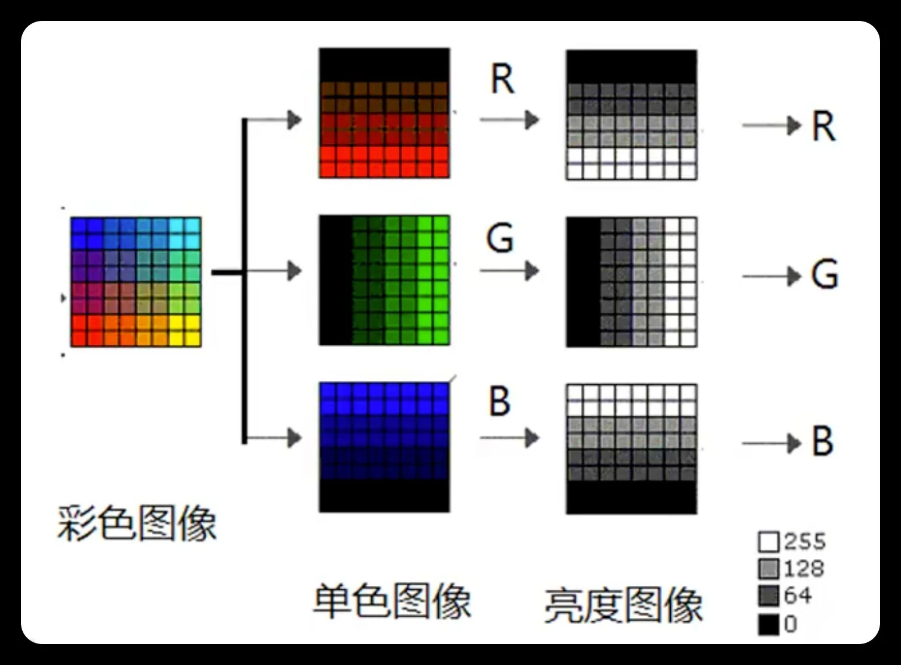
这与人眼的视觉特性直接相关：
1. 人眼对绿色波段的亮度最敏感（视锥细胞中 M-cone 对 ~530nm 绿光响应最强）
2. 亮度信息（Luma）主要来自绿色通道
3. 更多的绿色采样 = 更准确的亮度信息 = 更好的视觉质量
这也解释了为什么 YUV 色彩空间中 Y（亮度）的权重公式里绿色的系数最大：
绿色权重 0.587 远大于红色 0.299 和蓝色 0.114。
去马赛克（Demosaicing）Bayer CFA 的每个像素只记录了一种颜色分量（R、G 或 B），要得到完整的 RGB 像素，需要通过去马赛克算法从相邻像素插值出缺失的颜色分量：
原始 Bayer 数据： 去马赛克后：
G R G R (R,G,B) (R,G,B) (R,G,B) (R,G,B)
B G B G → (R,G,B) (R,G,B) (R,G,B) (R,G,B)
G R G R (R,G,B) (R,G,B) (R,G,B) (R,G,B)
B G B G (R,G,B) (R,G,B) (R,G,B) (R,G,B)去马赛克是摄像机 ISP（Image Signal Processor）的核心步骤之一。简单的算法使用双线性插值，高级算法使用边缘自适应插值以减少伪彩色和锯齿。
Bayer CFA 与视频编码的关系Bayer CFA 直接影响了视频编码的设计决策：
1. 4:2:0 色度子采样的合理性：Bayer 本身就已经对色度做了稀疏采样（R 和 B 各只占 25%），进一步做 4:2:0 子采样不会造成明显的视觉损失
2. YUV 优于 RGB：从 Bayer 数据转换到 YUV 比转换到 RGB 更自然，因为亮度信息（主要来自 G）已经是最密集的采样
3. 去马赛克质量影响编码效率：去马赛克引入的伪影（伪彩色、锯齿）会增加高频噪声，降低编码效率
白平衡是 ISP 流水线中去马赛克之后、色彩校正之前的关键步骤。它的目标是消除光源色偏，使白色物体在任何光照条件下都呈现白色。
为什么需要白平衡？不同光源的色温（Color Temperature）不同，导致同一物体在不同光源下呈现不同的颜色：
| 光源 | 色温（K） | 色偏倾向 | 示例 |
|---|---|---|---|
| 烛光 | ~1800K | 严重偏红/黄 | 烛光晚餐 |
| 白炽灯 | ~2800K | 偏红/黄 | 室内照明 |
| 荧光灯 | ~4000K | 偏绿 | 办公室照明 |
| 日光（正午） | ~5500K | 中性（标准白） | 室外晴天 |
| 阴天 | ~6500K | 偏蓝 | 多云天气 |
| 蓝天阴影 | ~8000K+ | 严重偏蓝 | 阴影区域 |
人眼具有色彩恒常性（Color Constancy）——大脑自动补偿光源色偏，使白色物体在任何光线下看起来都是白色。但摄像机传感器没有这种能力，必须通过白平衡算法来模拟。
白平衡的原理白平衡的核心思想很简单：调整 R、G、B 三个通道的增益，使场景中的"白色"或"中性灰色"在三个通道上具有相等的响应。
其中 $G_R, G_G, G_B$ 是三个通道的增益系数。通常将 G 通道增益设为 1（$G_G = 1$），只调整 R 和 B 通道。
白平衡增益的确定| 方法 | 原理 | 优点 | 缺点 | 应用 |
|---|---|---|---|---|
| 灰度世界法（Gray World） | 假设整幅图像的平均颜色为中性灰 | 简单、快速 | 大面积单色场景失效 | 自动白平衡基础算法 |
| 完美反射法（White Patch） | 假设图像中最亮的点是白色 | 对高对比度场景有效 | 高光过曝时失效 | 自动白平衡 |
| 色温估计法 | 从图像统计中估计光源色温 | 较准确 | 计算复杂 | 高级 AWB |
| 手动预设 | 用户选择光源类型（日光/白炽灯/荧光灯） | 可靠 | 需要用户干预 | 专业摄影 |
灰度世界假设（Gray World Assumption）是最经典的自动白平衡算法：
1. 计算整幅图像 R、G、B 通道的平均值：$\bar{R}, \bar{G}, \bar{B}$
2. 计算平均灰度：$\bar{K} = (\bar{R} + \bar{G} + \bar{B}) / 3$
3. 计算各通道增益：$G_R = \bar{K}/\bar{R}, \quad G_G = \bar{K}/\bar{G}, \quad G_B = \bar{K}/\bar{B}$
4. 应用增益：$R' = R \times G_R, \quad G' = G \times G_G, \quad B' = B \times G_B$
白平衡在 ISP 流水线中的位置完整的摄像机 ISP 流水线：
镜头 → CMOS 传感器（Bayer CFA）→ ADC
→ 黑电平校正（Black Level Correction）
→ 镜头阴影校正（Lens Shading Correction）
→ 去马赛克（Demosaicing）→ 得到 RGB
→ 白平衡（White Balance）← 消除光源色偏
→ 色彩校正（Color Correction）← 校正传感器光谱响应
→ 伽马校正（Gamma Correction）← 非线性编码
→ YUV 转换 → 视频编码器（H.264 等）白平衡和色彩校正的区别：
| 步骤 | 解决的问题 | 方法 | 本质 |
|---|---|---|---|
| 白平衡 | 光源色偏 | 3 通道独立增益 | "这个光是什么颜色" |
| 色彩校正 | 传感器光谱响应偏差 | 3×3 矩阵变换 | "这个传感器看到的是什么颜色" |
白平衡是对角矩阵（3 个独立增益），色彩校正是满矩阵（9 个系数，含通道间串扰补偿）。两者配合才能得到准确的颜色再现。
去马赛克后得到的 RGB 数据还不能直接使用，因为 Bayer 滤色片的光谱响应与理想的人眼三刺激函数（CIE Color Matching Functions）并不一致。此外，不同光源（日光、白炽灯、荧光灯）的光谱分布不同，会导致同一物体在不同光照下呈现不同的颜色。
色彩校正的目的色彩校正将传感器捕获的"原始 RGB"转换为"标准 RGB"（如 sRGB 或 BT.709），使颜色在不同设备和不同光照条件下保持一致。
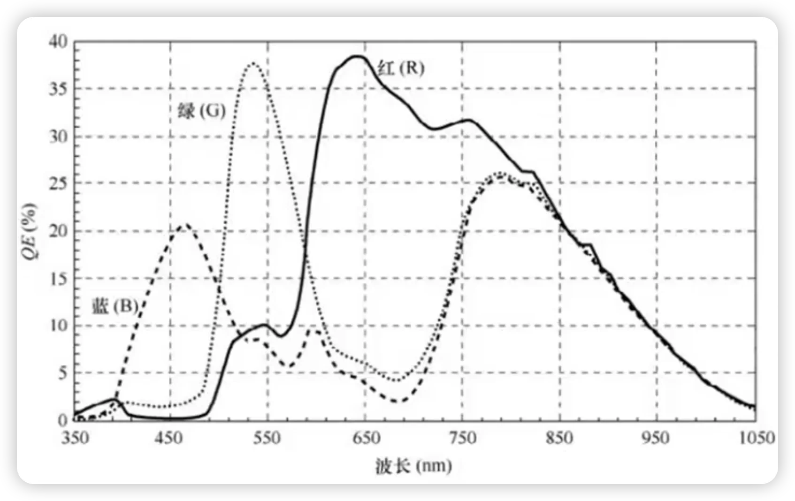
最常用的色彩校正方法是 3×3 线性矩阵变换：
其中：
- $[R_s, G_s, B_s]^T$ 是传感器原始 RGB 值
- $[R_c, G_c, B_c]^T$ 是校正后的标准 RGB 值
- $3 \times 3$ 矩阵的 9 个系数通过标定过程确定
1. 使用标准色卡（如 Macbeth ColorChecker，24 色）
2. 在标准光源下拍摄色卡，获取传感器的 RGB 响应
3. 已知色卡每个色块的标准 RGB/XYZ 值
4. 通过最小二乘法求解最优的 3×3 矩阵
色彩校正与白平衡的关系白平衡（White Balance）和色彩校正（Color Correction）是 ISP 流水线中两个不同但相关的步骤：
| 步骤 | 目的 | 方法 | 位置 |
|---|---|---|---|
| 白平衡 | 消除光源色偏，使白色物体在任何光源下都呈现白色 | 调整 R/G/B 通道增益 | 去马赛克之前或之后 |
| 色彩校正 | 校正传感器光谱响应与人眼的差异 | 3×3 矩阵变换 | 白平衡之后 |
白平衡解决的是"光源颜色"问题，色彩校正解决的是"传感器颜色"问题。
伽马校正是数字视频中最重要也最容易被忽略的非线性处理步骤。它解决了人眼感知的非线性与显示设备的非线性之间的匹配问题。
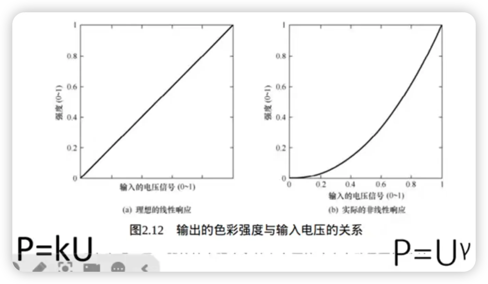
有两个独立的原因，恰好互相配合：
原因 1：CRT 显示器的非线性CRT（阴极射线管）显示器的电子枪输出电压与屏幕亮度之间的关系近似幂函数：
这意味着：输入电压 0.5（50%），输出亮度只有 $0.5^{2.2} \approx 0.22$（22%）。如果不做补偿，图像会严重偏暗。
原因 2：人眼感知的非线性人眼对亮度的感知近似对数关系——在暗区对亮度变化非常敏感，在亮区较不敏感。这恰好与 CRT 的非线性方向相反。
伽马校正的原理在编码端（摄像机/图像处理），对线性光信号施加预校正（编码伽马）：
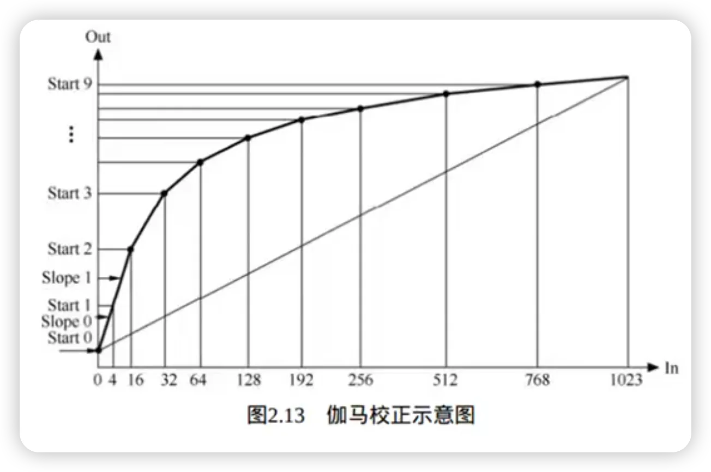
在显示端，CRT 自然施加显示伽马：
两者抵消，实现端到端的线性亮度再现。
伽马校正的额外好处：优化量化精度伽马校正不仅补偿了 CRT 的非线性，还优化了量化比特的分配：
- 编码伽马 $\gamma < 1$ 的幂函数拉伸了暗部、压缩了亮部
- 在 8-bit 量化下，暗部获得了更多的量化级数
- 这与人眼的感知特性完美匹配——暗部更敏感，需要更精细的量化
| 线性亮度 | 伽马编码后（γ=0.45） | 8-bit 量化值 |
|---|---|---|
| 0.01 | 0.126 | 32 |
| 0.10 | 0.355 | 90 |
| 0.50 | 0.732 | 187 |
| 1.00 | 1.000 | 255 |
可以看到，线性亮度 0.01（1%）在线性量化下只对应值 2.55（几乎无法区分），但伽马编码后对应值 32——暗部细节被有效保留。
标准伽马曲线| 标准 | 伽马值 | 说明 |
|---|---|---|
| sRGB | ~2.2（分段函数） | 线性段（<0.0031308）+ 幂函数段（γ≈2.4） |
| BT.709（HDTV） | ~1/0.45（分段函数） | 线性段 + 幂函数段 |
| BT.2020（UHDTV） | 同 BT.709 | 用于 HDR 时改用 PQ/HLG |
| DCI-P3（电影） | 2.6 | 影院投影标准 |
sRGB 和 BT.709 使用分段函数而非纯幂函数，是为了避免在零附近的数值问题（$x^{0.45}$ 在 $x \to 0$ 时导数趋于无穷）。
伽马校正与视频编码的关系伽马校正对视频编码有重要影响：
1. 所有标准视频信号都是伽马编码后的信号——H.264 编码的像素值已经是伽马校正后的非线性值
2. 量化效率提升：伽马编码使 8-bit 量化在感知上等效于约 12-bit 线性量化
3. 色度子采样的合理性：伽马编码后的信号中，亮度信息已经承载了大部分感知信息，色度可以安全地做 4:2:0 子采样
4. HDR 视频：HDR 使用 PQ（Perceptual Quantizer, SMPTE ST 2084）或 HLG（Hybrid Log-Gamma）替代传统伽马曲线，以支持更大的亮度范围（0–10000 nits）
| 扫描方式 | 原理 | 标记 | 示例 |
|---|---|---|---|
| 逐行扫描（Progressive） | 每帧扫描所有行 | p | 1080p、720p |
| 隔行扫描（Interlaced） | 每场扫描一半行，两场组成一帧 | i | 1080i、576i |
隔行扫描是 CRT 电视时代的遗留技术，用于在有限带宽下减少闪烁感。现代数字视频基本使用逐行扫描。H.264 支持隔行扫描（通过 MBAFF/PAFF 编码工具），但实际应用中逐行扫描占绝大多数。
在灰度图像中，每个像素只有一个亮度分量（Luminance），通常用 8-bit 表示（0–255，0 为纯黑，255 为纯白）。
在彩色图像中，每个像素由多个分量组成：
- RGB 色彩空间：红（R）、绿（G）、蓝（B）三个分量
- YUV 色彩空间：亮度（Y）、蓝色色度（U/Cb）、红色色度（V/Cr）三个分量
像素在空间上排列成二维网格，水平方向的像素数 × 垂直方向的像素数就是图像的分辨率。
分辨率定义了图像在水平和垂直方向上的像素数量，记作 $W \times H$。分辨率越高，图像包含的细节越丰富，但数据量也越大。
标准分辨率体系在视频编码和安防监控领域，有一套从早期视频会议发展而来的标准分辨率体系：
| 名称 | 分辨率 | 像素数 | 与 CIF 的关系 | 典型应用 |
|---|---|---|---|---|
| QCIF | 176×144 | 25,344 | 1/4 CIF | 早期移动视频 |
| CIF | 352×288 | 101,376 | 基准 | H.261/H.263 视频会议 |
| 2CIF / Half D1 | 704×288 | 202,752 | 2× CIF（水平翻倍） | 安防监控（宽屏） |
| 4CIF | 704×576 | 405,504 | 4× CIF | 安防监控、标清编码 |
| D1 | 720×576（PAL）/ 720×480（NTSC） | ~414,720 | ≈4× CIF | DVD、标清电视 |
| 16CIF | 1408×1152 | 1,622,016 | 16× CIF | 高清过渡格式 |
CIF（Common Intermediate Format，通用中间格式）是 H.261 标准定义的分辨率（352×288）。它的设计考虑了 PAL 和 NTSC 两种电视制式的兼容性：
- 水平 352 像素：PAL 和 NTSC 的折中
- 垂直 288 行：PAL 制式 576 行的一半（隔行扫描的一场）
| 名称 | 分辨率 | 像素数 | 典型应用 |
|---|---|---|---|
| SD（标清） | 720×576（PAL）/ 720×480（NTSC） | ~414K | DVD、模拟电视数字化 |
| HD（720p） | 1280×720 | ~922K | 早期高清视频 |
| Full HD（1080p） | 1920×1080 | ~2.07M | 主流视频、蓝光 |
| 2K | 2560×1440 | ~3.69M | 显示器、手机屏幕 |
| 4K UHD | 3840×2160 | ~8.29M | 超高清电视、流媒体 |
| 8K UHD | 7680×4320 | ~33.18M | 下一代超高清 |
从 CIF 到 4K UHD，像素数增长了约 80 倍，这对视频编码的压缩效率提出了巨大挑战。
| 帧率 | 来源 / 标准 | 典型应用 |
|---|---|---|
| 15 fps | 早期视频会议 | 低码率通信 |
| 23.976 fps | 电影胶片（24 fps 的 NTSC 兼容版） | 电影、影视制作 |
| 24 fps | 电影胶片标准 | 电影放映 |
| 25 fps | PAL 制式（50 Hz 电网 / 2） | 欧洲/中国电视 |
| 29.97 fps | NTSC 制式（60 Hz 电网 / 2 的彩色兼容版） | 北美/日本电视 |
| 30 fps | NTSC 制式（近似值） | 网络视频、手机录制 |
| 50 fps | PAL 高帧率 | 体育直播（欧洲） |
| 59.94 / 60 fps | NTSC 高帧率 | 体育直播、游戏 |
| 120 fps | 超高帧率 | 慢动作回放、VR |
未压缩视频的原始数据量与帧率成正比：
以 1080p、8-bit RGB 为例：
| 帧率 | 原始码率 |
|---|---|
| 24 fps | ~1.19 Gbps |
| 30 fps | ~1.49 Gbps |
| 60 fps | ~2.99 Gbps |
帧率翻倍意味着数据量翻倍。这就是为什么高帧率视频对编码器提出了更高要求。
| 模式 | 全称 | 原理 | 优势 | 劣势 |
|---|---|---|---|---|
| CBR | Constant Bitrate | 码率恒定，每秒分配相同比特 | 带宽可控，适合实时传输 | 复杂场景质量下降，简单场景浪费比特 |
| VBR | Variable Bitrate | 码率可变，复杂场景多分配比特 | 质量稳定，压缩效率高 | 峰值码率不可控，不适合实时传输 |
| ABR | Average Bitrate | 码率在目标值附近波动 | 兼顾质量和带宽 | 需要两遍编码（2-pass） |
以下是 H.264 编码下不同分辨率和质量的典型码率：
| 分辨率 | 帧率 | 低质量 | 中等质量 | 高质量 |
|---|---|---|---|---|
| CIF (352×288) | 30fps | 128 kbps | 384 kbps | 768 kbps |
| SD (720×576) | 25fps | 500 kbps | 1.5 Mbps | 3 Mbps |
| 720p | 30fps | 1 Mbps | 2.5 Mbps | 5 Mbps |
| 1080p | 30fps | 2 Mbps | 5 Mbps | 10 Mbps |
| 1080p | 60fps | 3 Mbps | 8 Mbps | 15 Mbps |
| 4K | 30fps | 8 Mbps | 20 Mbps | 40 Mbps |
码率需求大致与像素数和帧率的乘积成正比，但并非严格的线性关系：
- 分辨率翻倍（如 720p → 1080p），码率需求约增加 2–3 倍
- 帧率翻倍（如 30fps → 60fps），码率需求约增加 1.5–2 倍（因为帧间相关性增强，帧间预测效率提高）
例如，一段 10 分钟的 1080p 视频（5 Mbps 码率）：
| 扫描方式 | 原理 | 标记 | 示例 |
|---|---|---|---|
| 逐行扫描（Progressive） | 每帧扫描所有行 | p | 1080p、720p |
| 隔行扫描（Interlaced） | 每场扫描一半行，两场组成一帧 | i | 1080i、576i |
隔行扫描是 CRT 电视时代的遗留技术，用于在有限带宽下减少闪烁感。现代数字视频基本使用逐行扫描。H.264 支持隔行扫描（通过 MBAFF/PAFF 编码工具），但实际应用中逐行扫描占绝大多数。
视频压缩的本质是消除冗余。视频数据中存在四种主要冗余，其中空间冗余和时间冗余是最核心的两种。
空间冗余是指同一帧内相邻像素之间的强相关性。在自然图像中，相邻像素的值通常非常接近——一片蓝天、一面白墙、一个人的皮肤，这些区域内的像素值变化缓慢甚至几乎不变。
数学描述对于一幅图像 $f(x, y)$，相邻像素之间的相关性可以用自相关函数衡量：
对于自然图像，当 $(\Delta x, \Delta y)$ 很小时，$R \approx 1$（高度相关）；随着距离增大，相关性逐渐衰减。典型的一阶马尔可夫模型：
这意味着相邻像素之间的相关系数高达 0.9–0.99——绝大部分信息是重复的。
直观示例考虑一个 4×4 的像素块（灰度值）：
120 122 121 119
121 123 122 120
119 121 120 118
118 120 119 117这 16 个像素的值都在 117–123 之间，变化极小。如果直接存储，需要 $16 \times 8 = 128$ bit。但如果存储差值（DPCM）：
120 +2 -1 -2
+1 +2 -1 -2
-2 +2 -1 -2
-1 +2 -1 -2差值范围只有 -2 到 +2，用 3-bit 即可编码（而非 8-bit），总比特数降为 $16 \times 3 = 48$ bit（节省 62.5%）。
消除空间冗余的技术| 技术 | 原理 | 应用 |
|---|---|---|
| 帧内预测 | 用相邻已编码像素预测当前像素 | H.264 4×4 / 16×16 帧内预测 |
| 变换编码（DCT） | 将空间域信号变换到频率域，能量集中在低频 | JPEG、H.264 整数 DCT |
| 量化 | 丢弃高频系数（人眼不敏感的细节） | 所有有损压缩 |
| 差分编码（DPCM） | 编码相邻像素的差值而非原始值 | JPEG DC 系数编码 |
DCT 的核心作用是将高度相关的空间域像素变换为几乎不相关的频率域系数：
- 空间域：相邻像素高度相关 → 冗余大
- 频率域：DCT 系数之间几乎不相关 → 冗余小
- 能量集中：大部分能量集中在少数低频系数（DC 和前几个 AC）→ 高频系数可以大胆量化为零
这就是为什么 DCT 被称为"去相关变换"（Decorrelating Transform）。
时间冗余是指相邻帧之间像素的强相关性。在视频中，相邻帧通常拍摄的是同一场景，只有少量物体在运动，大部分背景几乎不变。这是视频压缩中贡献最大的冗余来源（约占总压缩效率的 50%）。
数学描述对于视频序列 $f(x, y, t)$，相邻帧之间的相关性：
对于典型的 30fps 视频，相邻帧（$\Delta t = 1/30$ 秒）之间的相关系数通常在 0.95–0.99 之间——比空间相关性更高。
直观示例考虑一个固定镜头拍摄的场景：
帧 t: [背景: 蓝天 + 建筑] [运动物体: 行人从左向右走]
帧 t+1: [背景: 蓝天 + 建筑] [运动物体: 行人向右移动了 5 像素]
帧 t+2: [背景: 蓝天 + 建筑] [运动物体: 行人向右移动了 10 像素]背景部分（约占画面的 80%）在三帧中完全相同。如果每帧独立编码，背景信息被重复编码了 3 次。利用时间冗余，只需：
1. 在帧 t 中完整编码背景（I 帧）
2. 在帧 t+1 和 t+2 中，只编码行人的运动（运动矢量 + 残差）
3. 背景部分直接"复制"帧 t 的数据
时间冗余 vs 空间冗余的对比| 维度 | 空间冗余 | 时间冗余 |
|---|---|---|
| 相关性来源 | 同一帧内相邻像素 | 相邻帧之间对应像素 |
| 相关系数 | 0.90–0.99 | 0.95–0.99（通常更高） |
| 消除方法 | 帧内预测 + DCT | 帧间预测 + 运动估计 |
| 压缩贡献 | ~30% | ~50%（最大贡献） |
| 典型技术 | 4×4/16×16 帧内模式 | P 帧 / B 帧 + MV |
| 失效场景 | 高频纹理区域（草地、毛发） | 场景切换、快速运动 |
| 技术 | 原理 | 效果 |
|---|---|---|
| 帧间预测 | 用参考帧的像素预测当前帧 | 消除静态背景冗余 |
| 运动估计（ME） | 在参考帧中搜索最佳匹配块 | 补偿物体运动 |
| 运动补偿（MC） | 用运动矢量指向的参考块做预测 | 精确对齐运动区域 |
| 多参考帧 | 从多个历史帧中选择最佳匹配 | 处理遮挡和周期运动 |
| B 帧双向预测 | 同时参考前后帧 | 进一步降低残差 |
时间冗余在以下场景中会显著降低：
1. 场景切换（Scene Cut）：前后帧是完全不同的场景，相关性接近零
2. 快速运动：物体运动超出搜索范围，运动估计失效
3. 遮挡/显露：物体被遮挡或新物体出现，参考帧中没有对应信息
4. 光照变化：闪光灯、淡入淡出等全局亮度变化
这些情况下，编码器会自动回退到帧内编码（I 帧或帧内宏块）。
视觉冗余是指人眼视觉系统（HVS）对某些信息不敏感，这些信息可以被丢弃而不影响主观感知质量。这是有损压缩的理论基础。
人眼的视觉特性决定了哪些信息可以安全丢弃：
| 视觉特性 | 含义 | 压缩利用方式 |
|---|---|---|
| 亮度敏感 > 色度敏感 | 人眼对亮度变化的敏感度远高于色度 | 4:2:0 色度子采样（色度数据减半） |
| 低频敏感 > 高频敏感 | 人眼对低频（大面积渐变）更敏感，对高频（细节纹理）较不敏感 | DCT 高频系数量化更激进 |
| 对比度掩蔽 | 在纹理复杂区域，人眼对失真更不敏感 | 自适应量化（纹理区域用更大 QP） |
| 运动掩蔽 | 快速运动区域人眼分辨力下降 | 运动区域可降低编码精度 |
YUV 4:2:0 格式将色度分辨率降为亮度的 1/4（水平 × 垂直各减半），数据量减少 50%，但人眼几乎无法察觉差异。
量化：视觉冗余的核心工具量化步长的选择直接利用了视觉冗余：
- 低频系数：小量化步长（保留细节）
- 高频系数：大量化步长（大胆丢弃）
- 色度系数：比亮度更激进的量化
统计冗余是指编码后的符号在概率分布上不均匀——某些符号出现频率高，某些出现频率低。熵编码利用这种不均匀性，给高频符号分配短码字，给低频符号分配长码字。
典型示例DCT 量化后的系数分布极度不均匀：
- 零值系数占 70–90%（高频被量化为零）
- ±1 占非零系数的大部分
- 大值系数极少出现
| 符号 | 出现概率 | 定长编码 | Huffman 编码 | 节省 |
|---|---|---|---|---|
| 0 | 80% | 3 bits | 1 bit | 67% |
| ±1 | 12% | 3 bits | 3 bits | 0% |
| ±2 | 5% | 3 bits | 4 bits | -33% |
| 其他 | 3% | 3 bits | 5–8 bits | 负 |
虽然个别符号的码长增加了，但平均码长从 3 bits 降到了约 1.5 bits（节省 50%）。
消除统计冗余的技术| 技术 | 原理 | 应用 |
|---|---|---|
| Huffman 编码 | 根据符号频率构建最优前缀码 | JPEG、MPEG-1/2 |
| 算术编码 | 将整个符号序列映射为 [0,1) 区间的一个实数 | H.264 CABAC、HEVC |
| 指数哥伦布码 | 对小值高效的变长码 | H.264 运动矢量、宏块类型 |
| CAVLC | 上下文自适应 VLC | H.264 Baseline Profile |
| CABAC | 上下文自适应二进制算术编码 | H.264 Main/High Profile |
以一个 1080p、30fps、8-bit 的未压缩视频为例：
经过 H.264 压缩后，典型码率为 5–20 Mbps，压缩比达到 75–300 倍。
这种巨大的压缩比不是单一技术实现的，而是多种冗余消除技术的组合效果：
| 冗余类型 | 消除技术 | 贡献比例（粗略估计） |
|---|---|---|
| 空间冗余 | 变换 + 量化 | ~30% |
| 时间冗余 | 运动估计 + 帧间预测 | ~50% |
| 视觉冗余 | 色度子采样 + 量化 | ~10% |
| 统计冗余 | 熵编码 | ~10% |
| 压缩类型 | 特点 | 压缩比 | 典型应用 |
|---|---|---|---|
| 无损压缩 | 完全可逆，不丢失任何信息 | 2–3 倍 | 医学影像、专业制作 |
| 有损压缩 | 不可逆，丢弃人眼不敏感的信息 | 50–300 倍 | 流媒体、广播、存储 |
H.264 是有损压缩标准。量化步骤是不可逆的——被丢弃的高频信息无法恢复。这是高压缩比的代价。
RGB 色彩空间对人眼的感知特性不够友好：三个通道（R、G、B）都包含亮度和色度信息，无法独立控制。
YUV 色彩空间将亮度（Y）和色度（U、V）分离：
- Y（Luma）：亮度分量，代表图像的明暗信息
- U（Cb）：蓝色色度分量（B - Y）
- V（Cr）：红色色度分量（R - Y）
这种分离有两个关键优势：
1. 人眼对亮度更敏感，对色度较不敏感——可以对色度使用更低的采样率（色度子采样）而不影响视觉质量
2. 黑白电视兼容——只传输 Y 分量即可显示黑白图像
BT.601 标准（标清视频）的转换公式：
BT.709 标准（高清视频）的转换公式：
注意绿色的权重最大（约 0.587 / 0.7152），因为人眼对绿色最敏感。
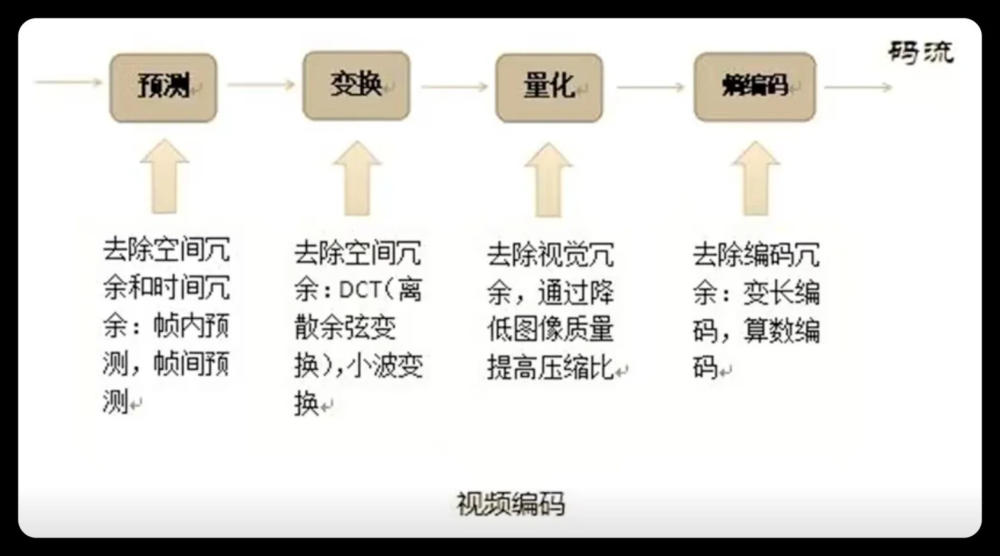
色度子采样是视频压缩中最简单也最有效的技术之一。它利用人眼对色度不敏感的特性，用比亮度更低的分辨率存储色度信息。
| 采样格式 | 含义 | 数据量 | 应用 |
|---|---|---|---|
| 4:4:4 | 色度与亮度同分辨率 | 100% | 专业影视制作 |
| 4:2:2 | 水平色度减半 | 67% | 广播级视频 |
| 4:2:0 | 水平+垂直色度各减半 | 50% | 消费级视频（H.264 默认） |
| 4:1:1 | 水平色度 1/4 | 50% | DV 格式 |
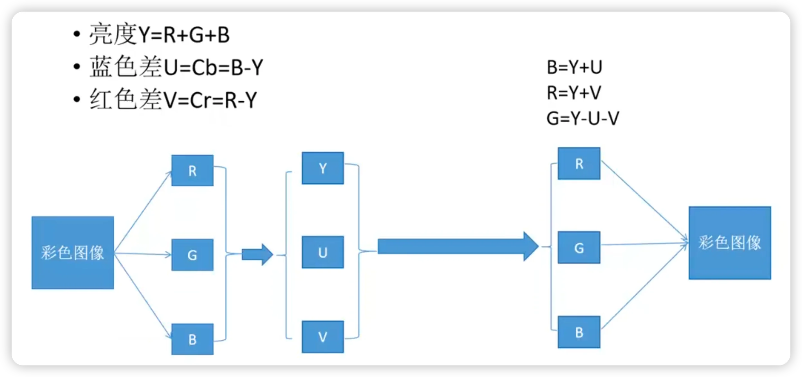
4:2:0 是最常用的格式：色度在水平和垂直方向都减半，数据量减少 50%，但视觉质量几乎不受影响。
H.264 默认处理 4:2:0 格式的 YUV 数据。对于一个 16×16 的宏块：
- 亮度（Y）：16×16 = 256 个采样点
- 色度（Cb/Cr）：各 8×8 = 64 个采样点
亮度分量是编码的主要对象，色度分量的编码相对简单（使用较少的预测模式）。
YUV 数据在内存中有两种存储方式：Packed（交错存储）和 Planar（平面存储）。这两种方式不影响编码算法，但影响数据访问效率和硬件实现。
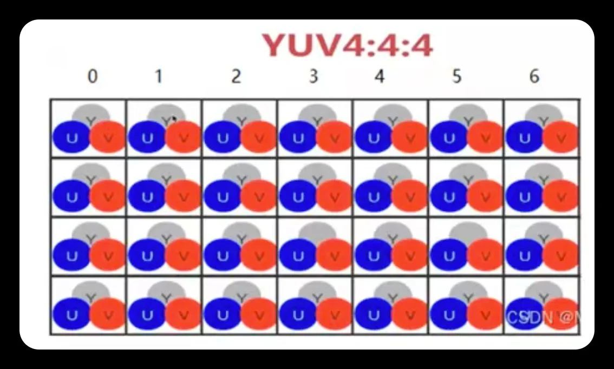
Y、U、V 分量交错存储在同一个内存区域中。常见的排列方式：
| 格式 | 排列顺序 | 说明 |
|---|---|---|
| YUYV (YUY2) | Y0 U0 Y1 V0, Y2 U2 Y3 V2, ... | 最常用，DirectShow 默认 |
| UYVY | U0 Y0 V0 Y1, U2 Y2 V2 Y3, ... | 某些采集卡使用 |
| YVYU | Y0 V0 Y1 U0, Y2 V2 Y3 U2, ... | 较少见 |
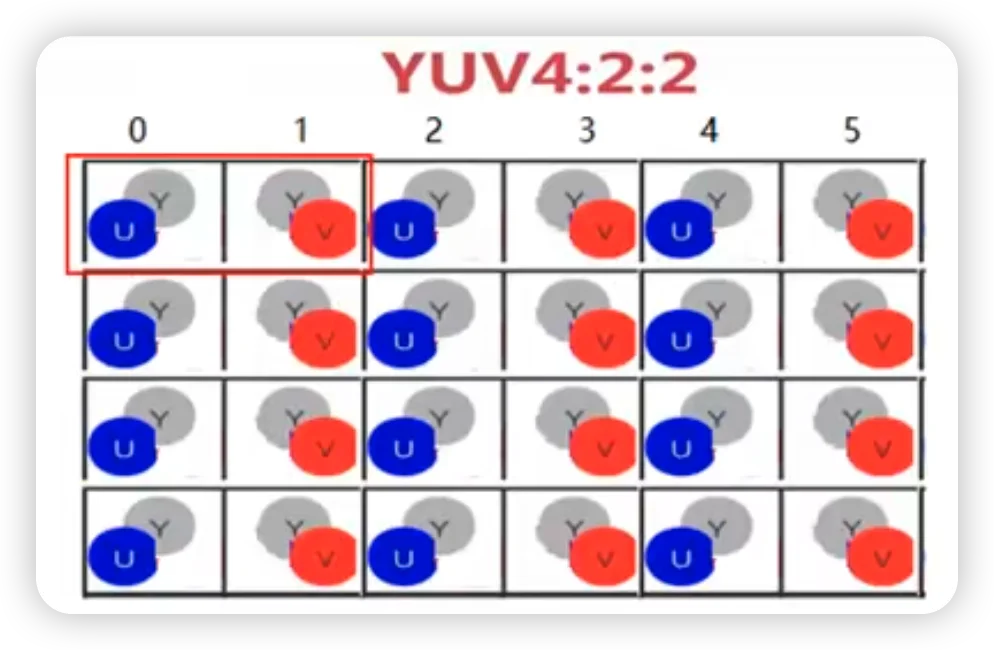
Packed 格式的优势是内存连续，适合直接显示（显卡可以直接读取）。但编码时需要先分离 Y、U、V 分量，增加了预处理开销。
Planar 格式（平面存储）Y、U、V 分量分别存储在三个独立的内存区域（平面）中：
内存布局（4:2:0 Planar）：
[Y 平面] Y0 Y1 Y2 Y3 Y4 Y5 Y6 Y7 ... (W×H 字节)
[U 平面] U0 U1 U2 U3 ... (W/2 × H/2 字节)
[V 平面] V0 V1 V2 V3 ... (W/2 × H/2 字节)| 格式 | 平面顺序 | 说明 |
|---|---|---|
| I420 (YUV420P) | Y → U → V | FFmpeg 默认，H.264 编码器标准输入 |
| YV12 | Y → V → U | U/V 平面顺序相反 |
| NV12 | Y → UV 交错 | Y 平面 + UV 交错平面（半平面格式） |
| NV21 | Y → VU 交错 | Y 平面 + VU 交错平面（Android 相机默认） |
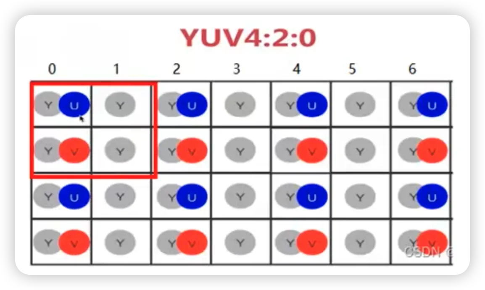
Planar 格式的优势是每个分量独立存储，编码器可以直接访问 Y 平面做亮度分析、访问 U/V 平面做色度处理，无需分离操作。
H.264 编码器使用哪种格式？绝大多数 H.264 编码器（x264、OpenH264、硬件编码器）使用 Planar 格式（I420/YUV420P）作为输入：
1. 编码器需要独立处理 Y、U、V 分量（不同的预测模式、量化参数）
2. Planar 格式的内存访问模式更适合 SIMD 优化（一次处理一行 Y 值）
3. 4:2:0 子采样下，U/V 平面的大小只有 Y 的 1/4，Planar 格式天然适配
如果输入是 Packed 格式（如摄像头输出的 YUYV），编码器需要先做格式转换（Packed → Planar），这一步通常由 libswscale（FFmpeg）或硬件 ISP 完成。
视频编码器将帧分为三种类型，每种类型使用不同的编码策略：
| 帧类型 | 全称 | 编码方式 | 特点 |
|---|---|---|---|
| I 帧 | Intra-coded | 仅帧内编码（类似 JPEG） | 独立解码，文件最大 |
| P 帧 | Predicted | 帧间预测（参考前面的帧） | 文件较小，需要参考帧 |
| B 帧 | Bi-directional | 双向预测（参考前后帧） | 文件最小，压缩比最高 |
I 帧只使用帧内预测，不参考其他帧。它是随机访问的入口点——解码器可以从任意 I 帧开始独立解码。I 帧的压缩比最低（约 10–20 倍），但它是整个 GOP 的"锚点"。
P 帧（Predicted Frame）P 帧参考前面的帧（前向参考），通过运动估计找到最佳匹配块，只编码残差。P 帧的压缩比约为 I 帧的 2–3 倍。
B 帧（Bi-directional Frame）B 帧同时参考前面和后面的帧（双向参考），选择最优的预测方向。B 帧的压缩比最高，但需要额外的帧缓冲区，且增加了编码延迟（因为需要等待后续帧）。
一个典型的帧大小对比（1080p 视频，中等质量）：
| 帧类型 | 典型大小 | 压缩比 |
|---|---|---|
| I 帧 | 50–150 KB | ~15 倍 |
| P 帧 | 10–40 KB | ~50 倍 |
| B 帧 | 3–15 KB | ~100 倍 |
这就是为什么视频编码器要尽可能多地使用 P 帧和 B 帧，而只在必要时插入 I 帧。
IDR（Instantaneous Decoder Refresh）帧是一种特殊的 I 帧。它与普通 I 帧的区别：
- 普通 I 帧：后续帧可能参考 IDR 帧之前的帧
- IDR 帧：解码器在遇到 IDR 帧时清空所有参考帧缓冲区，后续帧只能参考 IDR 帧及其之后的帧
IDR 帧是真正的随机访问点。在流媒体应用中，每个 GOP 的开头通常是一个 IDR 帧。
GOP 定义了 I、P、B 帧的排列模式。一个典型的 GOP 结构：
IDR B B P B B P B B P B B I B B P B B PGOP 参数：
- GOP 长度（两个 I 帧之间的帧数）：通常 12–60 帧
- GOP 结构（I/P/B 的排列模式）：如 IBBPBBPBBPBB
GOP 长度的权衡：
| GOP 长度 | 优势 | 劣势 |
|---|---|---|
| 短（12–15 帧） | 随机访问快、错误恢复快 | 压缩比低（I 帧占比大） |
| 长（60–300 帧） | 压缩比高 | 随机访问慢、错误传播严重 |
流媒体通常使用较短的 GOP（2–4 秒），以支持快速 seek 和错误恢复。存储场景可以使用更长的 GOP。
H.264 标准在架构上分为两层：
VCL（Video Coding Layer）视频编码层，负责核心的压缩工作：帧内/帧间预测、变换、量化、熵编码。VCL 输出的是编码后的视频数据。
NAL（Network Abstraction Layer）网络抽象层，负责将 VCL 数据打包为适合不同网络传输的格式。NAL 是 H.264 相比之前标准的一个重要创新——它将编码核心与传输格式解耦，使同一个编码流可以在不同网络环境中使用。
视频数据 → VCL（压缩编码） → NAL 单元 → 传输/存储
↓
RTP/MP4/TS/FLV...每个 NAL 单元由一个头部和载荷组成：
| 字段 | 大小 | 含义 |
|---|---|---|
| forbidden_zero_bit | 1 bit | 必须为 0 |
| nal_ref_idc | 2 bits | NAL 重要性指示（00=可丢弃，11=最重要） |
| nal_unit_type | 5 bits | NAL 单元类型 |
常见的 NAL 单元类型：
| 类型值 | 名称 | 含义 |
|---|---|---|
| 1 | Non-IDR slice | 非 IDR 帧的片数据 |
| 5 | IDR slice | IDR 帧的片数据 |
| 6 | SEI | 补充增强信息 |
| 7 | SPS | 序列参数集（分辨率、帧率等） |
| 8 | PPS | 图像参数集（量化参数、熵编码模式等） |
| 9 | Access unit delimiter | 访问单元分隔符 |
SPS 和 PPS 是 H.264 码流中的关键元数据。解码器需要先收到 SPS 和 PPS 才能正确解码视频数据。
H.264 码流从编码器输出到最终传输，经历四层封装。理解这四层结构是解析 H.264 码流的基础。
四层结构总览编码器输出
↓
SODB (String of Data Bits) ← 原始比特串
↓ + rbsp_trailing_bits
RBSP (Raw Byte Sequence Payload) ← 字节对齐的原始载荷
↓ + emulation prevention bytes
EBSP (Encapsulated Byte Sequence Payload) ← 防竞争字节插入后
↓ + NAL Header
NAL Unit ← 完整的 NAL 单元
↓ + Start Code (0x000001 / 0x00000001)
H.264 Bitstream ← 最终码流SODB 是编码器输出的最原始的比特串——熵编码（CAVLC 或 CABAC）后的直接结果。它是一串 0 和 1，长度不一定是 8 的倍数。
例如，编码完一个宏块后，SODB 可能是这样的：
1 010 011 00100 1 ... (长度可能是 17 bit)SODB 本身不能直接作为字节流传输，因为它不是字节对齐的。
RBSP（Raw Byte Sequence Payload）RBSP 是在 SODB 末尾添加 rbsp_trailing_bits 使其字节对齐后的结果：
SODB: 1 010 011 00100 1 (17 bit)
↓
RBSP: 10100110 01001 100 (加 trailing bits: 1 + 填充 0)
↓
字节: 0xA6 0x4C 0x80 (3 字节)rbsp_trailing_bits 的规则：
1. 先加一个 1 bit
2. 然后加 0 bit 直到总长度是 8 的倍数
3. 解码器读到这个 1 后面的 0 就知道 SODB 已经结束
EBSP 是 RBSP 经过防竞争字节插入（Emulation Prevention）后的结果。这是 H.264 码流中一个容易被忽略但非常重要的机制。
为什么需要防竞争字节？H.264 码流使用 起始码（Start Code）来分隔 NAL 单元：
0x000001（3 字节）：图像内分隔
0x00000001（4 字节）：序列级分隔
问题在于：视频数据是随机的，编码后的比特流中可能恰好出现 0x000001，这会导致解码器误认为是 NAL 单元边界，造成解析错误。
编码器在 RBSP 中扫描，当遇到以下序列时，在第三个字节前插入 0x03：
| RBSP 中的序列 | 插入后 | 说明 |
|---|---|---|
| 0x000000 | 0x00000300 | 插入 0x03 |
| 0x000001 | 0x00000301 | 插入 0x03 |
| 0x000002 | 0x00000302 | 插入 0x03 |
| 0x000003 | 0x00000303 | 插入 0x03 |
示例：
RBSP: ... 00 00 01 ... ← 可能被误认为起始码
↓
EBSP: ... 00 00 03 01 ... ← 插入 0x03 后不再匹配起始码解码器在解析时执行逆操作：遇到 0x000003 就删除 0x03，还原出 RBSP。
在 EBSP 前面加上 NAL 头部（1 字节）就构成了完整的 NAL 单元：
NAL Header (1 byte) + EBSP
↓
forbidden_zero_bit (1 bit) | nal_ref_idc (2 bits) | nal_unit_type (5 bits)多个 NAL Unit 之间用起始码分隔，构成最终的 H.264 码流：
0x00000001 [NAL Header][EBSP] 0x00000001 [NAL Header][EBSP] ...
↑ 起始码 ↑ 一个 NAL Unit ↑ 起始码 ↑ 另一个 NAL UnitH.264 码流
↓ 找起始码，分割 NAL Unit
NAL Unit
↓ 去掉 NAL Header
EBSP
↓ 删除防竞争字节 (0x000003 → 0x0000)
RBSP
↓ 去掉 rbsp_trailing_bits
SODB
↓ 熵解码 (CAVLC / CABAC)
编码数据 → 语法元素 (mv, residual, mb_type, ...)H.264 码流有两种封装格式，起始码的使用方式不同：
| 格式 | 全称 | 分隔方式 | 典型应用 |
|---|---|---|---|
| AnnexB | Byte Stream Format | 起始码 (0x000001 / 0x00000001) | TS 流、裸流文件 (.264 / .h264) |
| AVCC | AVCC Box Format | 长度前缀 (4 字节长度) | MP4 / fMP4 文件 |
AnnexB 使用起始码分隔，因此需要防竞争字节。AVCC 使用长度前缀分隔，不需要起始码，因此不需要防竞争字节。
SPS 是 H.264 码流中最高级别的参数集，包含了解码整个视频序列所需的全局参数。一个 SPS 适用于整个视频序列（从开始到结束，或直到新的 SPS 出现）。
SPS 包含的关键参数| 参数 | 含义 | 示例值 |
|---|---|---|
| profile_idc | Profile 标识 | 66=Baseline, 77=Main, 100=High |
| level_idc | Level 标识 | 30=Level 3.0, 40=Level 4.0 |
| pic_width_in_mbs_minus1 | 图像宽度（宏块数 - 1） | 119 → 120 宏块 → 1920 像素 |
| pic_height_in_map_units_minus1 | 图像高度（宏块数 - 1） | 67 → 68 宏块 → 1088 像素 |
| log2_max_frame_num_minus4 | 帧号最大值 | 决定 frame_num 的比特数 |
| max_num_ref_frames | 最大参考帧数 | 1–16 |
| frame_mbs_only_flag | 是否逐行扫描 | 1=逐行, 0=支持隔行 |
| bit_depth_luma_minus8 | 亮度位深 - 8 | 0=8-bit, 2=10-bit |
| bit_depth_chroma_minus8 | 色度位深 - 8 | 0=8-bit, 2=10-bit |
| vui_parameters_present_flag | 是否包含 VUI 参数 | VUI 包含帧率、色域等信息 |
每个 SPS 有一个 seq_parameter_set_id（0–31），允许最多 32 个不同的 SPS 同时存在。PPS 通过引用 SPS ID 来关联对应的 SPS。
这在实际应用中很有用：例如一个码流可以同时包含低分辨率和高分辨率的编码参数，解码器根据需要选择对应的 SPS。
VUI（Video Usability Information）SPS 可选包含 VUI 参数，提供辅助显示信息：
| VUI 参数 | 含义 | 作用 |
|---|---|---|
| aspect_ratio_info | 宽高比 | 4:3、16:9、1:1 等 |
| video_signal_type | 视频信号类型 | PAL/NTSC、全范围/有限范围 |
| colour_primaries | 色域标准 | BT.601、BT.709、BT.2020 |
| transfer_characteristics | 伽马/传输函数 | BT.709、sRGB、PQ、HLG |
| timing_info | 帧率信息 | num_units_in_tick / time_scale |
VUI 不影响解码过程，但影响显示效果。缺少 VUI 时，播放器可能使用错误的色彩空间或帧率。
PPS 包含了解码单帧图像所需的参数。一个 PPS 可以被多帧引用，不同的帧可以使用不同的 PPS。
PPS 包含的关键参数| 参数 | 含义 | 示例值 |
|---|---|---|
| pic_parameter_set_id | PPS 的 ID | 0–255 |
| seq_parameter_set_id | 引用的 SPS ID | 0–31 |
| entropy_coding_mode_flag | 熵编码模式 | 0=CAVLC, 1=CABAC |
| num_ref_idx_l0_default_active_minus1 | List0 默认参考帧数 - 1 | 通常 0–3 |
| num_ref_idx_l1_default_active_minus1 | List1 默认参考帧数 - 1 | B 帧使用 |
| pic_init_qp_minus26 | 初始 QP 偏移 | -26 到 +25 |
| deblocking_filter_control_present_flag | 是否可控制环路滤波 | 1=Slice 可控制滤波开关 |
| redundant_pic_cnt_present_flag | 是否支持冗余片 | 错误恢复用 |
1. 选择熵编码模式：PPS 决定该帧使用 CAVLC 还是 CABAC——这是编码效率的关键决策
2. 初始 QP 设置：PPS 设定帧的基准量化参数，Slice 层可以在此基础上调整
3. 参考帧数量：PPS 设定默认的参考帧数量，Slice 层可以覆盖
在 H.264 之前的标准（如 MPEG-2）中，序列级参数（分辨率、帧率等）被嵌入到每一帧的头部。这导致：
1. 冗余：每一帧都重复传输相同的参数
2. 不灵活：参数变化时需要重新同步
3. 不可靠：如果某一帧的参数丢失，后续帧无法解码
H.264 的参数集设计解决了这些问题：
优势 1：减少冗余SPS/PPS 只需在码流开始时传输一次（或参数变化时更新），后续帧通过 ID 引用即可。每个 Slice 头部只需 1–2 个字节指定 PPS ID，而不是重复传输所有参数。
优势 2：带外传输（Out-of-Band）SPS/PPS 可以通过独立于视频数据的通道传输：
- 带内（In-Band）：SPS/PPS 作为 NAL 单元嵌入码流中，在每个 IDR 帧前重复发送
- 带外（Out-of-Band）：SPS/PPS 通过 SDP（Session Description Protocol）在会话建立时单独传输
带外传输在实时通信（WebRTC、RTSP）中非常常见——SDP 协商时就交换了 SPS/PPS，视频数据包不需要携带这些参数。
优势 3：容错性如果 SPS/PPS 在传输中丢失，解码器可以等待下一个 IDR 帧（通常会重新发送 SPS/PPS）。即使丢失了一帧的 SPS/PPS，之前的 SPS/PPS 仍然有效，不会导致整个序列无法解码。
SPS/PPS 的传输时机| 场景 | 传输方式 | 说明 |
|---|---|---|
| 文件存储（MP4） | 存储在 moov box 中 | 文件头包含 SPS/PPS，播放器启动时读取 |
| 流媒体（HLS/DASH） | 每个片段开头 | 每个 TS/fMP4 片段开头包含 SPS/PPS NAL |
| 实时通信（WebRTC） | SDP 带外传输 | 会话建立时通过 SDP 交换，视频包不携带 |
| RTSP/RTP | SDP + 带内重复 | SDP 协商 + 每个 IDR 帧前重复发送 |
H.264 码流的参数层级结构：
SPS (序列参数集)
├── 分辨率、帧率、Profile/Level
├── 最大参考帧数
├── VUI（色域、伽马、宽高比）
│
└── PPS (图像参数集)
├── 熵编码模式（CAVLC/CABAC）
├── 初始 QP
├── 参考帧数量
│
└── Slice (片数据)
├── Slice 类型（I/P/B）
├── QP 偏移
├── 宏块数据（预测模式、MV、残差系数）层级引用关系：
- 一个 SPS 可被多个 PPS 引用（通过 seq_parameter_set_id）
- 一个 PPS 可被多个 Slice 引用（通过 pic_parameter_set_id）
- 一个 Slice 属于一帧，一帧包含 1 到多个 Slice
一帧可以被划分为多个 Slice（片），每个 Slice 独立编码，包含整数个宏块：
- I Slice：只含帧内编码宏块
- P Slice：含帧内和帧间编码宏块（前向预测）
- B Slice：含帧内和帧间编码宏块（双向预测）
Slice 的作用：
1. 错误恢复：一个 Slice 的解码错误不会传播到其他 Slice
2. 并行编码：不同 Slice 可以并行处理
3. MTU 适配：Slice 大小可以适配网络 MTU（最大传输单元）
帧内预测利用同一帧内相邻像素的空间相关性来预测当前块的值。与 JPEG 的独立 DCT 不同，H.264 的帧内预测会参考已编码的相邻块，只编码预测残差。
H.264 支持两种粒度的帧内预测：
- 16×16 亮度块：4 种预测模式（适合平坦区域）
- 4×4 亮度块：9 种预测模式（适合细节丰富区域）
16×16 亮度块支持 4 种预测模式：
| 模式 | 名称 | 预测方向 | 适用场景 |
|---|---|---|---|
| 0 | Vertical | 从上方像素垂直复制 | 水平纹理 |
| 1 | Horizontal | 从左侧像素水平复制 | 垂直纹理 |
| 2 | DC | 上方+左侧像素的平均值 | 平坦区域 |
| 3 | Plane | 线性平面拟合 | 渐变区域 |
其中 $a$ 和 $b$ 分别从上方和左侧的边界像素梯度计算得到。
8×8 色度块（Cb 和 Cr）支持 4 种预测模式，与 16×16 亮度的 4 种模式相同：DC、Horizontal、Vertical、Plane。
色度预测模式独立于亮度预测模式选择。编码器对色度单独做率失真优化（RDO），选择最优模式。
对于细节丰富的区域，16×16 的预测粒度过粗。H.264 支持将 16×16 宏块划分为 16 个 4×4 子块，每个子块独立选择预测模式。
4×4 亮度块支持 9 种预测模式：
| 模式编号 | 名称 | 预测方向 |
|---|---|---|
| 0 | Vertical | 垂直（上方像素复制） |
| 1 | Horizontal | 水平（左侧像素复制） |
| 2 | DC | DC（上方+左侧平均） |
| 3 | Diagonal Down-Left | 左下对角线 |
| 4 | Diagonal Down-Right | 右下对角线 |
| 5 | Vertical-Right | 右偏垂直 |
| 6 | Horizontal-Down | 下偏水平 |
| 7 | Vertical-Left | 左偏垂直 |
| 8 | Horizontal-Up | 上偏水平 |
9 种模式对应 8 个方向 + 1 个 DC 模式。每个 4×4 块使用上方和左侧已编码的像素作为参考：
参考像素布局（4×4 块）：
M A B C D E F G H ← 上方参考像素
L . . . . ← 当前 4×4 块
K . . . .
J . . . .
I . . . .- 模式 0（Vertical）：用 A,B,C,D 垂直复制到每列
- 模式 1（Horizontal）：用 I,J,K,L 水平复制到每行
- 模式 2（DC）：用上方和左侧像素的平均值填充整个块
- 模式 3–8：沿不同对角线方向插值
编码器对每种预测模式计算率失真代价（Rate-Distortion Cost）：
其中：
- $D$ 是失真（通常用 SSE 或 SATD）
- $R$ 是编码该模式所需的比特数
- $\lambda$ 是拉格朗日乘子，由 QP 决定
编码器选择 $J$ 最小的模式。这就是率失真优化（RDO）——在压缩率和失真之间找到最优平衡。
帧间预测是视频压缩中贡献最大的技术，约占总压缩效率的 50%。
基本思想：
1. 运动估计：在参考帧中搜索与当前块最匹配的区域，记录偏移量（运动矢量 MV）
2. 运动补偿：用参考帧中匹配区域的像素作为当前块的预测值
3. 残差编码：只编码当前块与预测值之间的差值
如果运动估计准确，残差的能量远小于原始像素值，可以用很少的比特编码。
H.264 以 16×16 宏块为基本编码单元，但每个宏块可以灵活划分为更小的块进行运动估计：
帧间预测的宏块划分：
| 模式 | 划分方式 | 块数 | MV 数 |
|---|---|---|---|
| 16×16 | 不划分 | 1 | 1 |
| 16×8 | 水平划分 | 2 | 2 |
| 8×16 | 垂直划分 | 2 | 2 |
| 8×8 | 四等分 | 4 | 4 |
| 8×8 子划分 | 每个 8×8 可再分为 8×4, 4×8, 4×4 | 最多 16 | 最多 16 |
这种灵活划分的意义：
- 平坦区域：使用大块（16×16），减少运动矢量开销
- 细节和运动复杂区域：使用小块（4×4），提高预测精度
编码器通过 RDO 自动选择最优的划分模式。
最常用的运动估计方法是块匹配（Block Matching）。对于当前帧中的每个块，在参考帧的搜索窗口内寻找最佳匹配：
| 准则 | 公式 | 精度 | 速度 | ||
|---|---|---|---|---|---|
| SAD | $\sum | I_c - I_r | $ | 中 | 最快 |
| SATD | $\sum | \text{HAD}(I_c - I_r) | $ | 高 | 中 |
| MSE | $\frac{1}{N^2}\sum (I_c - I_r)^2$ | 高 | 最慢 |
- 全搜索：穷举所有可能位置，精度最高但计算量巨大
- 三步搜索（TSS）：步长从大到小分三步搜索
- 菱形搜索（DS）：利用 MV 通常接近零的特点，优先搜索中心附近
真实的运动往往不是整像素的整数倍。H.264 支持 1/4 像素精度的运动估计：
- 半像素插值：使用 6-tap FIR 滤波器在整像素之间插值
- 1/4 像素插值：在半像素之间线性插值
其中 E,F,G,H,I,J 是整像素位置的亮度值。这个 6-tap 滤波器的系数 [1, -5, 20, 20, -5, 1] / 32 近似于 sinc 插值。
亚像素插值显著提高了运动估计的精度，减少了残差能量。
H.264 支持从多个参考帧中选择最佳匹配，而不仅仅是前一帧：
- 物体遮挡/显露：被遮挡的区域可能在更早的帧中可见
- 周期性运动：物体可能回到之前某个位置
- 场景切换：编码器可以选择与当前帧最相似的参考帧
参考帧列表最多支持 16 帧。实际应用中通常使用 2–5 帧参考。
P 帧和 B 帧的预测值可以是多个参考帧的加权平均：
加权预测对于淡入淡出场景特别有效。
直接模式（Direct Mode）B 帧中的直接模式不解码 MV，而是从空间相邻块或时域相邻帧推导：
- 时域直接：从最近的参考帧中推断当前块的 MV
- 空域直接：从前一编码块的空间邻居推断
直接模式不需要传输 MV，大幅节省比特。
运动矢量差分编码（MVD）H.264 对 MV 做差分编码：
预测 MV 来自左侧、上方、左上方的相邻块。
H.264 使用 4×4 整数 DCT 变换（不是标准的浮点 DCT）。这是 H.264 的一个重要创新：
其中 $C_f$ 是整数变换矩阵：
反变换矩阵：
- 精确一致：编解码器之间不存在浮点精度差异（反变换完全精确）
- 计算高效：只需整数加法和移位操作
- 硬件友好：适合 ASIC/FPGA 实现
H.264 High Profile 额外支持 8×8 整数 DCT 变换，适用于高分辨率视频。8×8 变换在高频细节保留方面优于 4×4 变换，但计算量更大。
编码器可以自适应选择 4×4 或 8×8 变换（通过 RDO）。
对于帧内 16×16 模式，H.264 对 16 个 4×4 块的 DC 系数再做一次 4×4 Hadamard 变换：
Hadamard 变换进一步压缩了 DC 系数之间的相关性。
H.264 使用标量量化器：
量化步长 $Q_{\text{step}}$ 由量化参数 QP（0–51）控制：
| QP | $Q_{\text{step}}$ | 效果 |
|---|---|---|
| 0 | 0.625 | 最高质量，最低压缩 |
| 12 | 2.5 | 高质量 |
| 24 | 10 | 中等质量 |
| 36 | 40 | 低质量，高压缩 |
| 51 | 224 | 最低质量，最高压缩 |
QP 每增加 6，量化步长翻倍。 这意味着 QP 增加 6 时，码率大约减半。
熵编码是压缩流水线的最后一步。它消除统计冗余——编码后的符号（量化系数、运动矢量、宏块类型等）在概率分布上不均匀，出现频率高的符号用短码字，频率低的用长码字。
H.264 支持两种熵编码模式：
| 模式 | 全称 | Profile | 效率 | 复杂度 |
|---|---|---|---|---|
| CAVLC | Context-Adaptive VLC | Baseline | 中 | 低 |
| CABAC | Context-Adaptive Binary Arithmetic Coding | Main/High | 高 | 高 |
CABAC 比 CAVLC 节省约 10%–15% 的比特，但计算复杂度显著更高。
指数哥伦布码（Exp-Golomb Code）是 H.264 中用于编码语法元素（Syntax Elements）的变长编码方案。它是哥伦布码（Golomb Code）的推广，对小值非常高效——值越小码字越短，值越大码字越长。
H.264 中大量语法元素使用指数哥伦布码编码：
- 宏块类型（mb_type）
- 运动矢量差值（MVD）
- 参考帧索引（ref_idx）
- 量化参数差值（delta_qp）
- CAVLC 中的 TotalCoeffs、TrailingOnes 等
$k$-阶指数哥伦布码的编码步骤（H.264 使用 $k=0$，即 0 阶 Exp-Golomb）：
1. 将待编码值 $v$ 加 1：$v' = v + 1$
2. 将 $v'$ 写为二进制
3. 在二进制表示前面添加 $(\text{bit_length} - 1)$ 个前导零
0 阶 Exp-Golomb 码表| 值 $v$ | $v+1$（二进制） | 码字 | 码长 |
|---|---|---|---|
| 0 | 1 | 1 | 1 |
| 1 | 10 | 010 | 3 |
| 2 | 11 | 011 | 3 |
| 3 | 100 | 00100 | 5 |
| 4 | 101 | 00101 | 5 |
| 5 | 110 | 00110 | 5 |
| 6 | 111 | 00111 | 5 |
| 7 | 1000 | 0001000 | 7 |
每个 Exp-Golomb 码字由三部分组成：
[前导零] [1] [信息位]- 前导零：数量 = 信息位的位数
- 1：分隔符，标记信息位的开始
- 信息位：$v+1$ 的二进制表示去掉最高位的 1
H.264 中的语法元素具有明显的小值偏向：
- 运动矢量差值（MVD）大多接近零（运动通常很平缓）
- 宏块类型中，SKIP 模式（值=0）在 P 帧中占比很高
- 参考帧索引通常选择最近的帧（值小）
Exp-Golomb 码对值 0 只用 1 bit，对值 1–2 用 3 bits，对值 3–6 用 5 bits——完美匹配了小值高频的分布特性。
四种变体H.264 定义了四种 Exp-Golomb 编码方式，用于不同取值范围的语法元素：
| 变体 | 名称 | 适用场景 | 映射规则 |
|---|---|---|---|
| ue(v) | 无符号 Exp-Golomb | 非负整数：宏块类型、参考帧索引 | code_num = v |
| se(v) | 有符号 Exp-Golomb | 可正可负：MVD、delta_qp | v > 0 → code_num = 2v-1 v ≤ 0 → code_num = -2v |
| te(v) | 截断 Exp-Golomb | 有上限的整数（0 ~ N） | N=1 时 1 bit 反转；否则同 ue(v) |
| me(v) | 映射 Exp-Golomb | coded_block_pattern（CBP） | 查表映射（Inter/Intra 模式各一张表） |
最简单的形式，直接对非负整数 $v$ 进行 0 阶 Exp-Golomb 编码。H.264 中最常用的语法元素：
| 语法元素 | 含义 | 典型值分布 |
|---|---|---|
| mb_type | 宏块编码模式 | SKIP（值=0）占 P 帧 60%+ |
| ref_idx | 参考帧索引 | 0 最常见（选最近帧） |
| mb_qp_delta | QP 偏移量 | 小值高频，偶尔大跳变 |
有符号 Exp-Golomb 的核心思想是将正负整数交替映射到非负整数上，保证绝对值小的数映射到小 code_num：
| 原始值 $v$ | 映射规则 | code_num | 码字 |
|---|---|---|---|
| 0 | -2×0 | 0 | 1 |
| 1 | 2×1-1 | 1 | 010 |
| -1 | -2×(-1) | 2 | 011 |
| 2 | 2×2-1 | 3 | 00100 |
| -2 | -2×(-2) | 4 | 00101 |
| 3 | 2×3-1 | 5 | 00110 |
| -3 | -2×(-3) | 6 | 00111 |
交替映射（zigzag 映射）保证了绝对值相同的正负数 code_num 相邻（如 1→1, -1→2；2→3, -2→4）。这样在解码时，只需读出一个 code_num，就能通过简单的奇偶判断还原原始值：
if code_num is odd: v = (code_num + 1) / 2
if code_num is even: v = -(code_num / 2)运动矢量通常围绕零波动（运动平缓场景），MVD 的分布近似拉普拉斯分布：
- MVD=0 的概率约 40–60%（用 1 bit）
- MVD=±1 的概率约 15–20%（用 3 bits）
- MVD=±2 的概率约 5–10%（用 5 bits）
te(v) 用于取值范围受限的语法元素（0 ~ range）。它的特殊之处在于当 range=1 时只用 1 bit 编码：
- range=1（即值只能是 0 或 1）：直接用
1 - v编码。即 0→1, 1→0。只花 1 bit。
- range > 1：与 ue(v) 相同，但最大值不能超过 range。
te(v) 的典型应用：
- field_coding_flag：逐行 vs 隔行编码标志（只有 0/1 两种可能）
- transform_size_8x8_flag：4×4 vs 8×8 变换标志
me(v) 是最特殊的一种——它不是直接计算，而是查表映射。H.264 为 coded_block_pattern（CBP）定义了两张映射表：
- Intra 模式 CBP 表：64 个条目，每个 CBP 值映射到一个 code_num
- Inter 模式 CBP 表：48 个条目
CBP（Coded Block Pattern）表示宏块中哪些 4×4 子块有非零残差系数。由于 CBP 的取值不是均匀分布的（某些模式极高频出现），H.264 标准委员会通过统计实际视频数据，手工设计了这两张最优映射表。
me(v) 的设计哲学：当统计特性已知且固定时，查表映射可以比数学公式更精确地匹配实际分布。
📺 视频讲解推荐
Redknot-乔红 (2022). 从代码实现角度详细讲解 Exp-Golomb 编码/解码的完整流程，包含 ue(v)、se(v) 的编解码逻辑和 C 语言实现。配套代码：EyerH264Decoder。
CAVLC 用于 Baseline Profile。它的核心思想是根据已编码的语法元素动态选择不同的 VLC 表：
残差系数编码流程：1. TotalCoeffs：编码非零系数的总数
2. TrailingOnes：编码末尾 ±1 的个数（最多 3 个）
3. Level：编码每个非零系数的值（从高频到低频）
4. TotalZeros：编码零的总数
5. RunBefore：编码每个非零系数前的零的个数
CAVLC 利用了 DCT 系数的两个统计特性：
- 高频系数大多为零（zigzag 扫描后零集中在末尾）
- 非零系数的值通常较小（±1 最常见）
CABAC 是 H.264 最高效的熵编码模式，用于 Main Profile 和 High Profile。
CABAC 的工作流程： Step 1：二值化（Binarization）将非二进制语法元素转换为二进制串（bin string）。不同的语法元素使用不同的二值化方案：
| 语法元素 | 二值化方法 |
|---|---|
| 宏块类型 | 定长码 |
| 运动矢量差值 | 指数哥伦布码 |
| 量化系数 | 一元码 + 定长码 |
根据相邻已编码元素的状态选择上下文模型。每个上下文模型维护一个概率估计：
- 例如，编码当前块的非零系数个数时，参考上方和左侧块的非零系数个数来选择上下文模型
- H.264 定义了约 460 个上下文模型
使用选定的上下文模型的概率估计进行二进制算术编码。算术编码的核心思想是将整个符号序列映射为 [0, 1) 区间内的一个实数。
Step 4：概率更新（Probability Update）每编码一个 bin，更新对应上下文模型的概率估计。H.264 使用查表法（64 个概率状态）快速更新。
| 测试序列 | CAVLC 码率 | CABAC 码率 | 节省 |
|---|---|---|---|
| Foreman CIF | 512 kbps | 445 kbps | 13% |
| Mobile CIF | 1024 kbps | 890 kbps | 13% |
| 720p HD | 4 Mbps | 3.4 Mbps | 15% |
CABAC 的优势在高分辨率和高码率下更明显。
H.264 引入了环路内自适应去块滤波（In-loop Deblocking Filter），这是 H.264 相比之前标准的一个重要改进。
为什么叫"环路内"？去块滤波在编码环路内部运行，滤波后的帧作为后续帧的参考帧。这意味着：
1. 解码端和编码端使用完全相同的滤波（保证一致性）
2. 滤波后的参考帧更干净，提高了后续帧的预测精度
滤波强度对每个 4×4 块边界，根据以下因素确定滤波强度（Boundary Strength, Bs）：
| Bs 值 | 条件 | 滤波强度 |
|---|---|---|
| 4 | 帧内编码块边界 | 最强 |
| 3 | — | — |
| 2 | 帧间编码块，有编码残差 | 中等 |
| 1 | 帧间编码块，无残差但 MV 差异大 | 弱 |
| 0 | 帧间编码块，无残差且 MV 差异小 | 不滤波 |
滤波过程对边界两侧的像素进行平滑，消除块效应（blocking artifacts）。
H.264 定义了多个 Profile，每个 Profile 是一组编码工具的子集：
| Profile | 工具集 | 典型应用 |
|---|---|---|
| Baseline | I/P 帧，CAVLC，无 B 帧 | 视频会议、移动设备 |
| Main | I/P/B 帧，CABAC，隔行扫描 | 数字电视、存储 |
| Extended | 数据分区 | 无线传输 |
| High | 8×8 变换，量化矩阵，4:2:2/4:4:4 | 蓝光、广播、流媒体 |
| High 10 | High + 10-bit | 专业制作 |
| High 4:2:2 | High 10 + 4:2:2 | 广播级 |
| High 4:4:4 | High 4:2:2 + 4:4:4 | 无损/近无损 |
Baseline Profile 最简单，适合低功耗设备。High Profile 功能最全，是目前使用最多的 Profile。
Level 定义了码率、分辨率、帧率等性能上限：
| Level | 最大码率 | 最大分辨率 | 最大帧率 | 典型应用 |
|---|---|---|---|---|
| 1.0 | 64 kbps | 176×144 | 15fps | 移动视频通话 |
| 1.3 | 768 kbps | 352×288 | 30fps | 低码率视频 |
| 3.0 | 10 Mbps | 720×576 | 30fps | 标清视频 |
| 3.1 | 14 Mbps | 1280×720 | 30fps | 720p |
| 4.0 | 20 Mbps | 2048×1024 | 30fps | 2K |
| 4.1 | 50 Mbps | 2048×1024 | 30fps | 1080p |
| 5.0 | 135 Mbps | 3672×1536 | 30fps | 2K 高帧率 |
| 5.1 | 240 Mbps | 4096×2160 | 30fps | 4K |
Profile 和 Level 的组合（如 "High@L4.1"）完整描述了一个 H.264 码流的编码工具集和性能要求。
输入帧（YUV 4:2:0）
│
├─ 宏块划分（16×16 → 可选 8×8 子划分）
│
├─ 帧内预测 或 帧间预测（运动估计 + 运动补偿）
│ │
│ ├─ 帧内：4×4（9 种模式）或 16×16（4 种模式）
│ └─ 帧间：多参考帧 + 1/4 像素精度 + 灵活块划分
│
├─ 残差计算
│
├─ 整数 DCT 变换（4×4 或 8×8）
│
├─ 量化（QP 0–51）
│
├─ 熵编码（CAVLC 或 CABAC）
│
├─ 输出 NAL 单元 → 码流
│
└─ 重建路径（用于参考帧）：
反量化 → 反变换 → 重建帧 → 环路滤波 → 参考帧存储这就是 H.264 的完整编码流水线。每个环节都经过精心设计，共同实现了相比 MPEG-2 约 50% 的压缩效率提升。
参考来源
- Richardson, I. E. G. (2010). The H.264 Advanced Video Compression Standard (2nd ed.). Wiley.
- ITU-T H.264 (2021). "Advanced Video Coding for Generic Audiovisual Services".
- Wiegand, T., et al. (2003). "Overview of the H.264/AVC Video Coding Standard". IEEE Transactions on Circuits and Systems for Video Technology, 13(7), 560–576.
- Marpe, D., Schwarz, H., & Wiegand, T. (2003). "Context-Based Adaptive Binary Arithmetic Coding in the H.264/AVC Compression Standard". IEEE Transactions on Circuits and Systems for Video Technology, 13(7), 620–636.
- Sullivan, G. J., et al. (2012). "Overview of the High Efficiency Video Coding (HEVC) Standard". IEEE TCSVT, 22(12), 1649–1668.（含 H.264 与 HEVC 对比）
- 望天空云卷云舒 (2025). H.264视频编码原理系列（抖音合集，12集）：从概述、数字视频基础、数据冗余与压缩、RGB到YUV编码、帧分类、图像组与层结构、帧内/帧间预测、DCT变换与量化到熵编码的完整讲解。
- Redknot-乔红 (2022). 自己动手写 H.264 解码器——指数哥伦布熵编码（B站，41:16）。从 C 语言实现角度详解 Exp-Golomb 编解码流程，配套代码：EyerH264Decoder。
- Redknot-乔红. zzsin.com：视频编解码工具集——YUV Eye（YUV 图像分析）、Codec Eye（视频码流分析）、h265web（Web 端 H.265 播放器）、Shader++（OpenGL Shader 在线编写与视频渲染）、色域空间教学课件等。